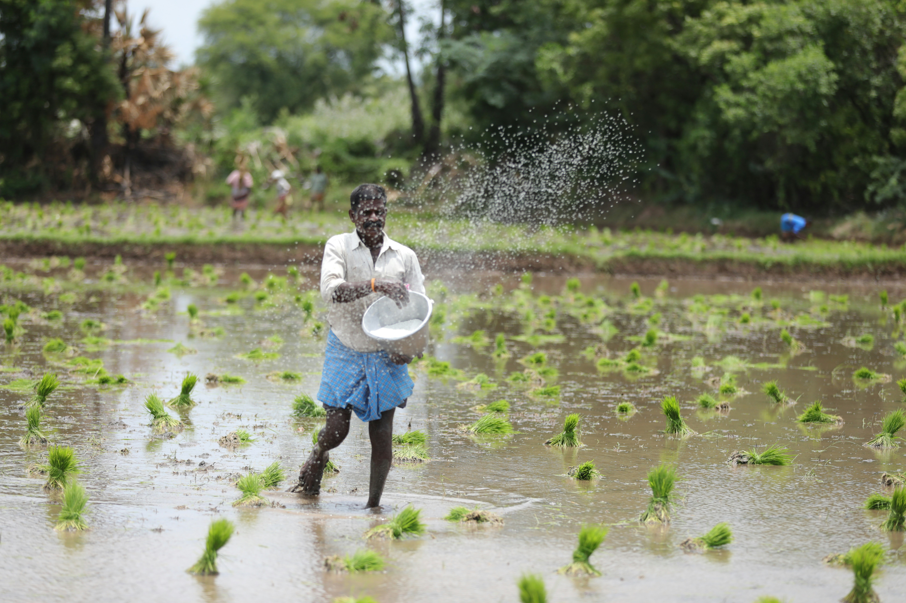
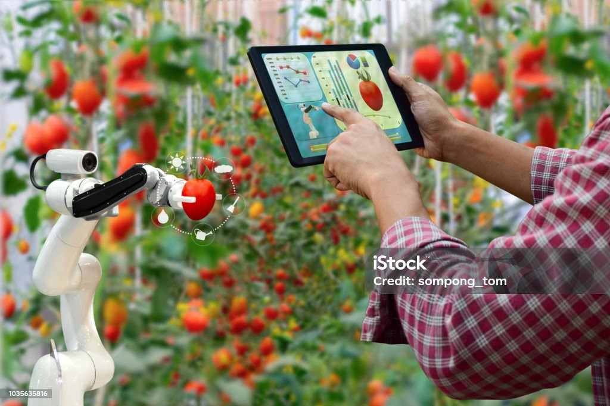

Contact Us
For any inquiries or assistance, feel free to reach out to us.
Email: kisanmitra@gmail.com
Phone: 0261 253xxx
Address: Gujrat Low Soc, Near Low Garden
Ahmedabad, Gujrat
|
 |
About UsAt KisanMitra, our mission is to bridge the gap between traditional farming practices and modern agricultural technologies. With a deep-rooted commitment to the farming community, we strive to empower farmers with cutting-edge tools, valuable knowledge, and accessible resources. Our platform serves as a one-stop destination for farmers, offering a diverse range of services including renting high-quality farming equipment, procuring essential pesticides, and facilitating the sale of agricultural produce. We aim to streamline farming operations, enhance crop yields, and promote sustainable agricultural practices. Driven by innovation and a passion for agriculture, we continuously seek to evolve and adapt to the changing needs of farmers. Through strategic partnerships, community engagement, and ongoing research, we endeavor to uplift rural economies, foster environmental stewardship, and ensure food security for generations to come. Join us on this journey towards a brighter, more prosperous future for agriculture. Together, let's cultivate growth, nurture sustainability, and harvest success. |
Our Values
|
|
Our TeamOur team consists of dedicated professionals with diverse backgrounds in agriculture, technology, and business. Together, we work tirelessly to serve the needs of farmers and contribute to the growth and development of the agricultural sector. |
|
Our StoryIt all started with two college friends, Aryan and Parth, who shared a common passion for agriculture and technology. During their summer breaks, they would visit their ancestral villages and witness the challenges faced by farmers firsthand. Driven by a desire to make a meaningful impact, Aryan and Parth embarked on a journey to revolutionize the agricultural sector. Armed with their knowledge and enthusiasm, they set out to create a platform that would empower farmers and promote sustainable farming practices. After months of research and planning, KisanMitra was born. The platform aimed to bridge the gap between traditional farming methods and modern technology, providing farmers with access to high-quality equipment, essential resources, and expert guidance. With dedication and perseverance, Aryan and Parth worked tirelessly to grow KisanMitra into a trusted online destination for farmers across the country. They collaborated with industry experts, formed strategic partnerships, and leveraged the latest advancements in technology to meet the evolving needs of farmers. Today, KisanMitra stands as a testament to Aryan and Parth's vision and commitment. Their journey from college friends to co-founders has inspired countless others to join the movement towards a brighter, more sustainable future for agriculture. |
 |